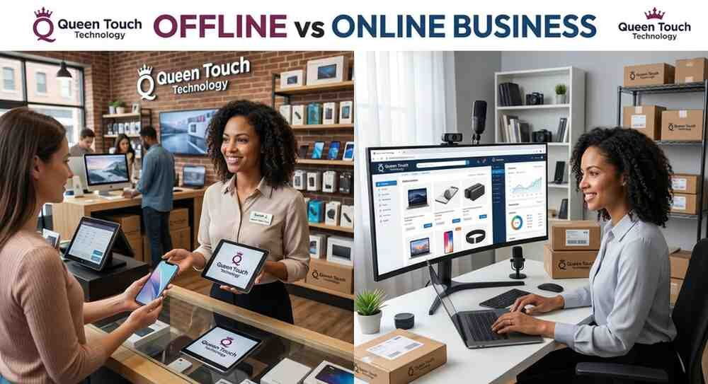

Offline vs Online Business: Why Digital Presence Matters More Than Ever
Discover why a strong digital presence is essential for modern businesses and how websites, SEO, AI, and digital marketing can help you attract more customers and achieve sustainable growth with QTT.
The way customers discover and interact with businesses has changed dramatically. While offline businesses continue to play an important role, today's consumers search online before making purchasing decisions. A strong digital presence helps businesses build trust, reach more customers, and remain competitive in an increasingly digital world.
At Queen Touch Technology (QTT), 7 Reasons Your Business May Be Losing Customers Every Day we help businesses establish a powerful online presence through professional websites, SEO, digital marketing, AI-powered business solutions, CRM systems, and business automation. Here's why investing in your digital presence matters more than ever.
Discover how Essential Technology Insights Every Business Owner Should Know impacts efficiency, increases operational expenses, and limits scalability in modern businesses.

1. Customers Search Online Before They Buy
Whether your business operates offline or online, most customers begin their buying journey with an online search. A professional website and strong search engine visibility help potential customers discover your business before your competitors.
2. Your Website Works 24/7
Unlike a physical store with fixed business hours, your website is always available. It allows customers to learn about your services, submit inquiries, request quotes, and make purchasing decisions anytime and from anywhere.
3. Digital Marketing Reaches the Right Audience
SEO, social media marketing, and online advertising help businesses connect with potential customers who are actively searching for their products and services. A targeted digital strategy delivers measurable results and better return on investment.
4. Online Presence Builds Customer Trust
Customers are more likely to trust businesses with professional websites, positive online reviews, updated social media profiles, and clear contact information. A strong digital presence enhances credibility and influences buying decisions.
5. Automation Improves Customer Experience
Business automation, live chat, CRM systems, and AI-powered customer support enable faster responses and personalized communication. These technologies improve customer satisfaction while reducing manual workloads.
6. Data Helps You Make Smarter Decisions
Digital platforms provide valuable insights into customer behavior, marketing performance, and sales trends. Business Intelligence (BI) dashboards and analytics help you optimize strategies and improve business performance.
7. Businesses Without a Digital Presence Risk Falling Behind
As consumer behavior continues shifting online, businesses without a strong digital presence risk losing visibility, leads, and customers. Investing in digital transformation today helps secure long-term growth and competitive advantage.
"A physical location builds your local reputation, but a strong digital presence expands your reach, builds trust, and creates opportunities without geographical limits."